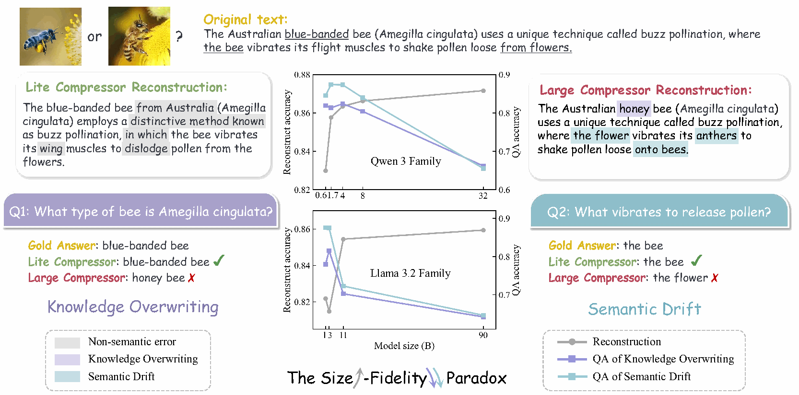
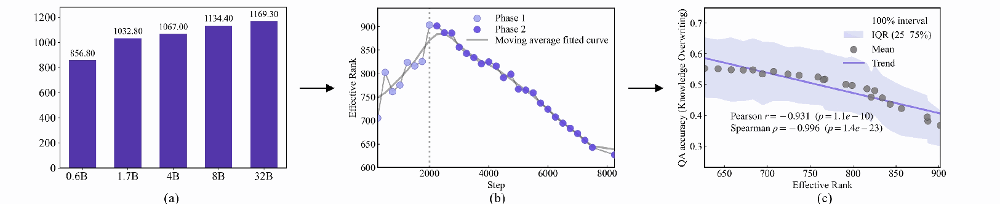
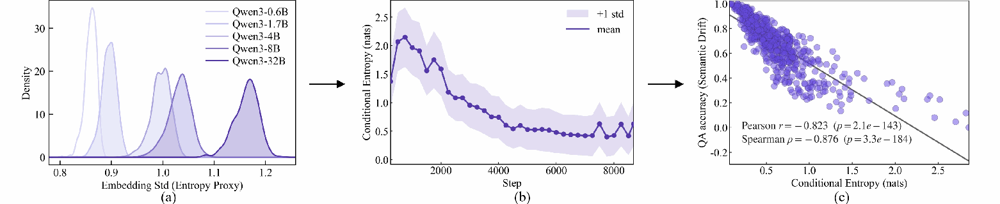

NeurIPS 2026
When Less is More
The LLM Scaling Paradox
in Context Compression
1 Tsinghua University2 Baidu Inc.3 Xi’an Jiaotong University4 City University of Hong Kong
Abstract

Scaling up model parameters has long been a prevalent training paradigm driven by the assumption that larger models yield superior generation capabilities. However, under lossy context compression in a compressor–decoder setup, we find a Size-Fidelity Paradox: increasing compressor size can lessen the faithfulness of reconstructed contexts though reconstruction error decreases. Across 27 compressor setups spanning model families, scales, and compression rates, we coin this paradox arising from two dominant factors: 1) knowledge overwriting: larger models increasingly replace source facts with their own prior beliefs, e.g., “the white strawberry” → “the red strawberry”; and 2) semantic drift: larger models tend to paraphrase or restructure content instead of reproducing it verbatim, e.g., “Alice hit Bob” → “Bob hit Alice”. Interestingly, this paradox persists across varied settings, with mid-sized compressors often outperforming larger ones in faithful recovery. By analyzing the compressed memory via embedding geometry and reconstruction determinacy, we further reveal that compressors tend to organize memory across broader semantic subspaces, yielding more ambiguous representations prone to overwriting, drift, and weakened recovery. These findings complement existing evaluations of context compression and expose a breakdown of scaling laws when the objective shifts from plausible generation to faithful preservation.
Main Observations
We study 27 compressor configurations from the Qwen and LLaMA families, spanning 0.6B–90B parameters and compression rates of 4×, 16×, and 64×. Two diagnostic QA tasks measure aspects of source fidelity that surface reconstruction scores can miss:
- Knowledge overwriting: a reconstruction replaces contextual facts with the model’s parametric knowledge, even when the context deliberately contradicts that knowledge.
- Semantic drift: a reconstruction changes roles, relations, predicates, or modifier scope while retaining similar words and topics.
Better reconstruction does not always mean better fidelity
Moderately sized compressors often preserve the source more faithfully than larger ones. The selected results below compare 3B and 90B LLaMA-family compressors; the paper reports the complete evaluation.
| Compressor | Reconstruction BLEU | Knowledge overwriting QA accuracy | Semantic drift QA accuracy |
|---|---|---|---|
| 3B | 0.29 | 0.62 | 0.41 |
| 90B | 0.33 | 0.53 | 0.28 |
At 64×, moving from 3B to 90B raises BLEU by 0.04, while semantic-drift QA falls by 0.13.
Diagnosing compressed memory
Effective rank describes the organization of memory embeddings; teacher-forced conditional entropy measures how tightly memory constrains reconstruction. These diagnostics associate changes in compressed memory with knowledge overwriting and semantic drift.


These observations are diagnostic associations, rather than a complete causal account. Additional experiments in the paper examine decoder compatibility, pretraining domain, loss weighting, RAG-based QA, and in-context learning.
Diagnostic QA Dataset
The release contains 22,894 QA pairs across two tasks and four subsets. Original JSON files are preserved alongside normalized, viewer-ready records on Hugging Face.
| Task | Source | Contexts | QA pairs |
|---|---|---|---|
| Knowledge overwriting | FaithEval | 598 | 598 |
| Knowledge overwriting | ConflictQA | 1,356 | 1,356 |
| Semantic drift | FineWeb | 449 | 8,980 |
| Semantic drift | FaithEval | 598 | 11,960 |
The 3,001 task-context records are not globally unique passages: FaithEval contexts are reused across tasks.
Examples
Loading the source example…
Load the data
from datasets import load_dataset
ds = load_dataset(
"Rshnn/When-Less-Is-More",
"semantic_drift_fineweb",
split="test",
)See the data guide for field mappings and annotation deviations. ConflictQA’s contextual boolean label is kept separate from its prior-based answer statement.
QA Generation Prompts
The following prompts are reproduced from Appendix D. The semantic-drift prompt targets 20 questions per context. The optional knowledge-overwriting prompt generates candidates; the released overwriting benchmark contains one QA per context.
Semantic drift Appendix D.1
You arean expert dataset writer building a QA suite to detect TOPIC/ENTITY DRIFT after
compression+reconstruction.
GOAL
Generate questions that will fail if the reconstructed text:
- shifts the main topic, scope or subject,
- replaces specific entities with generic categories (over-generalization),
- changes the stated actions or relationships, such as rewriting key verbs/relations in a way
that changes meaning (relationship drift),
- drops list items or swaps roles/relationships (who did what to whom),
- breaks cross-sentence relations (cause/effect, contrast, concession, example, and progression
are weakened, reversed, or rewritten).
IMPORTANT: We are NOT adding distractor sentences. We want high-coverage,
high-precision QA over the given CONTEXT.
HARD RULES
- Output EXACTLY 20 QA items as JSON only (no extra text).
- 15 items must be answerable from CONTEXT.
- For answerable items, the answer MUST be an exact substring from CONTEXT (verbatim,
case/punctuation preserved).
- Provide evidence_span: a short quote from CONTEXT that contains the answer verbatim.
- Answers must be SPECIFIC: do NOT use pronouns-only answers (it/they/this/that/he/she).
Prefer named entities or concrete noun phrases.
- 5 items must be unanswerable but plausible and closely related (to detect drift-to-generic or
invented details).
- For these, set answer="UNANSWERABLE" and evidence_span="".
COVERAGE & DIVERSITY REQUIREMENTS (for the 15 answerable)
- Make sure answers cover the entire context:
->=4 answers from the first third of CONTEXT,
->=4 from the middle third,
->=4 from the last third.
- Include the following question types (minimum counts):
1) main_topic (>=1): asks for the central subject/entity or the discussed domain/category.
2) entity_list (>=2): asks for lists or multiple items mentioned (answer is the exact list span).
3) predicate_exact (>=1): asks for the EXACT verb/relational phrase used.
- The gold answer must include the predicate words, not just an entity.
4) relation_anchor ( >=1): asks about explicit relations: reason, contrast, cause/effect,
“instead/however”, “to do X, they do Y”.
- The answer should be the specific clause/phrase that states the relation (short span).
5) coreference_link (>=2): asks what a pronoun/this/that/these refers to, answered by the
antecedent noun phrase in CONTEXT.
6) role_binding (>=2): asks who performs an action or what is affected (forces correct role
assignment).
7) modifier_scope (>=2): asks for extracting key modifiers that often get generalized away
(category qualifiers, degree/adverb, constraints).
QUALITY CONSTRAINTS
- Keep each question unambiguous with a single correct answer span.
- Avoid trivial questions that can be answered by many spans (e.g., “What is mentioned?”).
- Avoid yes/no questions unless the answer span is a clear “yes/no” phrase in CONTEXT (rare).
OUTPUT JSON FORMAT
{
"qas": [
{
"id": "T01",
"type": "answerable" | "unanswerable",
"probe": "main_topic" | "entity_list" | "predicate_exact" | "relation_anchor" |
"coreference_link" | "role_binding" | "modifier_scope",
"question": "...",
"answer": "...",
"evidence_span": "..."
}
]
}
CONTEXT
{CONTEXT}
SELF-CHECK (must satisfy before output)
- For every answerable item: answer string appears exactly in CONTEXT.
- For every unanswerable item: CONTEXT does not explicitly contain the answer.
- Ensure all probe-type minimum counts are met.Knowledge overwriting Appendix D.2 · optional
You area high-precision question writer for measuring whether a reconstructed text stays
faithful to the given context even when the context contradicts common knowledge.
TASK
Given CONTEXT, generate QA items that:
- Anchor on statements that may conflict with typical world knowledge, stereotypes, or common
textbook facts.
- The gold answers must follow CONTEXT (contextual truth), not real-world truth.
RULES
- Write questions in the same language as CONTEXT.
- Produce exactly 12 QA items in JSON (no extra text).
- 9 items must be answerable from CONTEXT with EXACT-SUBSTRING answers (verbatim).
- 3 items must be unanswerable (plausible "world-knowledge" questions that readers might
assume, but CONTEXT does not state).
- Among the 9 answerable items:
- At least 5 must be marked "world_conflict": true
* world_conflict means: a typical educated reader might expect a different answer from
general knowledge,
BUT the answer is explicitly given in CONTEXT.
- At least 3 must include named entities / numbers / dates if present.
- At least 3 must test causal or procedural relations (X leads to Y) to detect "corrective
rewriting".
- For each answerable item, provide:
- answer (verbatim substring)
- evidence_span (short quote containing answer)
- world_conflict (true/false)
- conflict_note: 1 short sentence explaining what common belief it might contradict (do
NOT correct it).
OUTPUT FORMAT (JSON)
{
"qas": [
{
"id": "K1",
"type": "answerable" | "unanswerable",
"world_conflict": true | false,
"conflict_note": "...",
"question": "...",
"answer": "...",
"evidence_span": "..."
}
]
}
CONTEXT
{CONTEXT}
SELF-CHECK
- Do not “fix” the context. Gold answers must reflect CONTEXT exactly.
- For answerable: answer must be an exact substring in CONTEXT.
- For unanswerable: ensure CONTEXT does not contain the answer.Acknowledgments & Reproducibility
Our compressor–decoder setup follows PCC: Pretraining Context Compressor for Large Language Models with Embedding-Based Memory (Dai et al., ACL 2025). We thank the PCC authors for their foundational work and publicly available implementation.
Each 256-token segment is compressed into 64, 16, or 4 memory embeddings. The compressor and memory converter are trained while the decoder is frozen. Appendix B provides the training and preprocessing protocol.
This release contains diagnostic data, QA generation prompts, documentation, and a data validator. Model checkpoints and the study’s training/evaluation implementation are not included.
We also thank the creators of FaithEval, ConflictQA, and FineWeb. Please see the source attributions and terms.
Citation
@inproceedings{guo2026whenlessismore,
title = {When Less is More: The {LLM} Scaling Paradox in Context Compression},
author = {Guo, Ruishan and Liu, Yibing and Ma, Guoxin and Wang, Yan and
Zhang, Yueyang and Xia, Long and Chen, Kecheng and Sun, Zhiyuan and Shi, Daiting},
booktitle = {Advances in Neural Information Processing Systems},
year = {2026},
url = {https://arxiv.org/pdf/2602.09789}
}